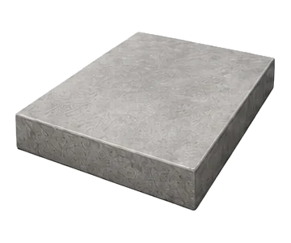

Surface plan
Use, load, slope, joints, edge conditions, and finish expectations are captured upfront.
Concrete installation
Plan new concrete with the right surface type, site prep, reinforcement, finish, and cure workflow before the first truck arrives.

Build from the ground up
Installation requests are organized around use case, thickness, drainage, access, reinforcement, texture, and scheduling. That structure helps crews understand the job fast and helps owners compare real scope instead of vague promises.

What is included
Each request is framed around the installation details that change the outcome, not a generic square-foot price.
Use, load, slope, joints, edge conditions, and finish expectations are captured upfront.
Access, demo, grading, compaction, and form complexity are made visible before scheduling.
Concrete delivery, crew timing, and placement workflow stay connected to site constraints.
Protection windows and next-use timing are documented so the surface is not rushed.
Process
The installation path keeps decisions in order, from the first site note to final finish expectations.

Define location, use, dimensions, drainage, and surface finish.
Clarify excavation, base, forms, reinforcement, and access constraints.
Align material delivery, placement, finishing, and cure protection.
Installation gallery
Swipe through common installation categories that benefit from better scope definition before work begins.
FAQ
Surface type, rough dimensions, current site condition, access limits, preferred finish, and timing goals are the most useful starting details.
Yes. A driveway, walkway, and patio can be grouped into one brief when they share access or schedule needs.
They can. Broom, smooth, exposed aggregate, saw-cut joints, and edge details all affect planning and crew workflow.